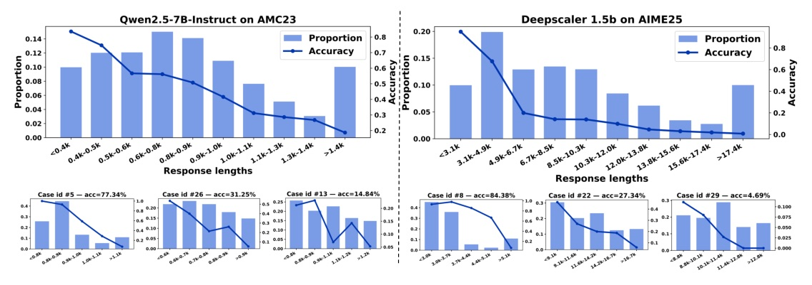
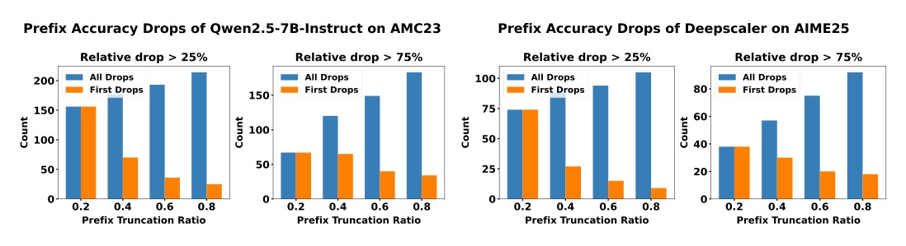
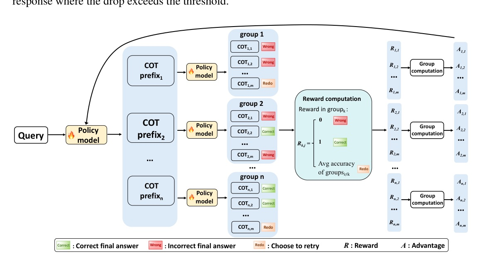
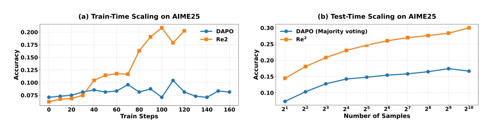
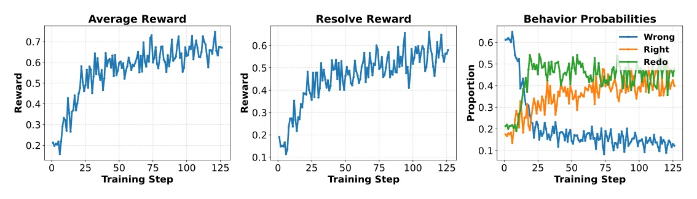
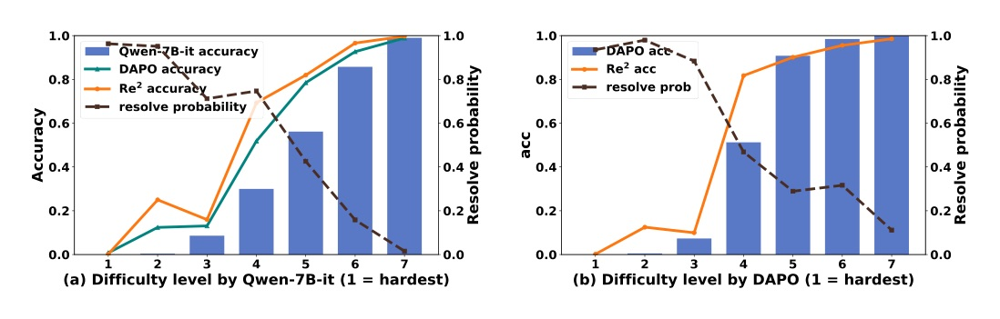

將「重來」變成一個可學習、可估值的 RL action，而不是無止盡地把錯的 CoT 寫長。
不是讓模型「想更久」，而是讓它在早期路徑已經壞掉時，知道何時放棄並重新解題。

128 responses per problem；作者發現全資料集及不同難度單題都呈現長度與正確率的負相關。


每題先 sample n 個 full responses，隨機截在 [0, 0.8]；對每個 prefix 生 m 個 continuations。
| Model | DAPO avg | Re2 avg | Delta |
|---|---|---|---|
| Qwen2.5-7B Base | 41.7 | 47.5 | +5.8 |
| Qwen2.5-14B Base | 47.4 | 52.9 | +5.5 |
| Llama-3.2-3B Instruct | 29.8 | 32.5 | +2.7 |
| Qwen2.5-7B Instruct | 43.0 | 47.4 | +4.4 |
| DeepSeek-R1-Distill-Llama-8B | 55.9 | 60.5 | +4.4 |
| Method | AIME24 | AIME25 | AMC23 | GSM8K | GPQA |
|---|---|---|---|---|---|
| DAPO | 16.0 | 8.6 | 62.3 | 92.6 | 35.4 |
| Re2 | 18.6 | 21.2 | 64.7 | 94.1 | 38.4 |

Fig.1(a) reports comparable generated and trained tokens per step; Fig.1(b) compares test-time sample counts under the same training budget.

Re2 的核心不是「更會猜答案」，而是停止把錯誤推理硬湊成最終答案。
上：vanilla → Re2 redo behavior（Abstract p.1）；下：DAPO-estimated difficulty group 4 accuracy（§5.5 p.10）。

“when the initial direction or quality of the CoT is suboptimal, the model often fails to reach the correct answer, even after generating several times more tokens.”
當 CoT 起手方向或品質不佳，即使多產生好幾倍 token，模型仍常無法走到正確答案。
“The results reveal that for most incorrect responses, a significant drop in accuracy already occurs when only the first 20% of the response is used as the prefix.”
多數錯誤回答只取前 20% 當 prefix，就已出現顯著準確率下跌。
“Re2 enables the model to output a final answer only when it is confident, and to honestly indicate the need to restart when the reasoning becomes unpromising.”
Re2 讓模型只在有把握時作答，推理不再有希望時則明確選擇重來。
ICLR 2026 · arXiv:2603.07197 · Full paper: Re2: Unlocking LLM Reasoning via Reinforcement Learning with Re-solving